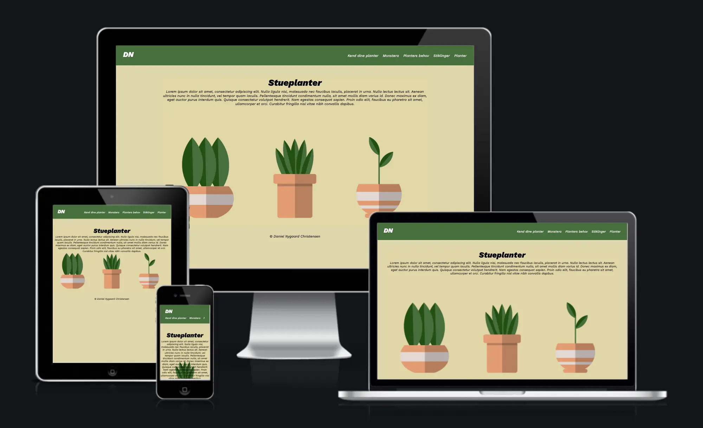

GRUNDLÆGGENDE WEB
Temabeskrivelse
I temaet Grundlæggende web får vi stiftet bekendtskab med HTML og CSS, som vi brugte til at lave vores første responsive website. Vi fik tildelt et layout diagram som vi skulle følge, således vores grids og kolonner blev delt op som de skulle. Sitet skulle følge en designstil som vi fik tildelt, det var i mit tilfælde flat design. Flat design har referencer til “Swiss Design” og “Bauhaus”, og kendetegnes ved det minimalistiske og simple design. Til sidst blev vi introduceret til photoshop, som vi brugte til at kreere et splash billede til vores website. Da mit website omhandler stueplanter, lavede jeg et splash billede med planter. Jeg søgte inspiration på google og plante hjemmesider.
RESPONSIVE SITESTIL PITCH
